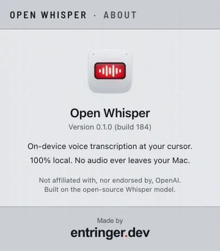

The About window tells you which copy of Open Whisper you have. This page also says where the terms of use and the notices for the parts made by others are, and where new versions are published.
The About window
- Open the menu: the icon in the menu bar on the Mac, in the notification area on Windows.
- Choose About Open Whisper.
- Close it with Esc.
It shows:
- The app's name and the line Version … (build …).
- On-device voice transcription at your cursor.
- 100% local. No audio ever leaves your Mac. On Windows: 100% local. No audio ever leaves your PC.
- A note that Open Whisper is not affiliated with, nor endorsed by, OpenAI, and is built on the Whisper model.
- The link Made by entringer.dev, which opens that page in your browser.



Version and build
The version, such as 0.1.0, names the release. The build number tells apart copies made for the same version.
You can select the line and copy it. Paste it into any problem report. From the command line, open-whisper --version prints the version too.
Terms of use
Open Whisper is free: to install and use, for personal or professional work, on as many computers as you like, with no account. The full terms, in Portuguese and English, are at openwhisper.entringer.dev/terms.txt.
Mac
A copy ships inside the app, as LICENSE.txt in Open Whisper.app/Contents/Resources/.
Windows
The installer shows them before installing, and a copy is installed with the app as LICENSE.txt.
Third-party notices
Open Whisper includes work by others, such as the Whisper speech models, the whisper.cpp engine and the Barlow typeface. Their notices and licenses are at openwhisper.entringer.dev/third-party-notices.txt, and a copy ships with the app as THIRD-PARTY-NOTICES.txt, next to LICENSE.txt.
Releases and their notes
Every version is published on the Releases page, with notes on what changed and the files to download, each with its checksum.
Open Whisper doesn't check for updates by itself: it makes no network request you didn't ask for. To hear about new versions, follow the Releases page: on GitHub, Watch → Custom → Releases. Installing is covered in Install.